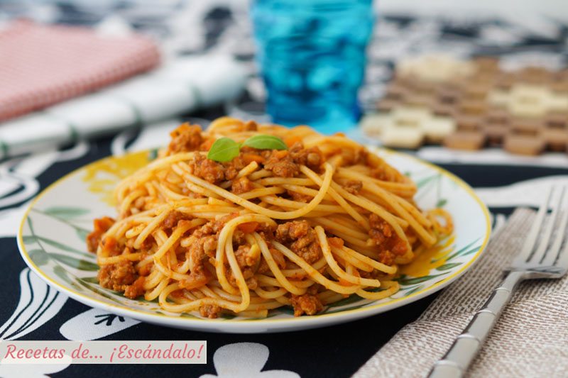

Chunky Italian Spaghetti Sauce

Kari's recipe, read more to know how to get this meal on YOUR table!
Please follow the next steps accordingly, but before, read the list of ingredients blow. Do not skip any of them, if you do, the dish will not come out as planned. Most importantly, treat your food kindly.
Ingredients:
- 16 ounce diced tomatoes
- 15 ounce tomato sauce
- 1 tablespoon garlic powder
- 2 teaspoons white sugar
- 2 teaspoon dried parsley
- 1/4 teaspoon dried basil
Steps:
- Combine diced tomatoes, tomato sauce, garlic powder, sugar, parsley, salt, oregano, basil, and pepper in a saucepan; bring to a boil. Lower heat to medium-low, cover saucepan, and simmer until flavors blend, about 30 minutes.
- Preheat oven to 350 degrees F (175 degrees C). In a large skillet over medium-high heat, brown beef and season with salt and pepper; drain. Stir in spaghetti sauce and garlic and simmer 5 minutes.
- In a medium bowl, combine mozzarella, Cheddar and ricotta; stir well. In 9x13 inch pan, alternate layers of noodles, meat mixture and cheese mixture until pan is filled.
- Bake in preheated oven for 30 minutes, or until cheese is melted and bubbly.